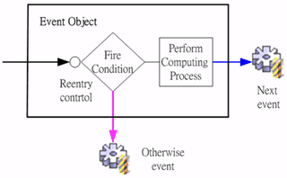
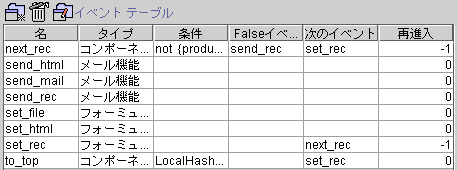

|

|
 |
Chapter 11 Event |
 |
11.
イベント (event)
イベント分類 (event type)
イベントテーブル (event table)
イベントフローのスキーマ (event flow
schema)

処理プロセスは
(computing process)４つの部分(コンポーネント、データソース、モジュール、進階)に分けてランタイム
(runtime)の段階で実行・コントロールを行います：
-
コンポーネントプロパティの変更
(ファイル、位置、サイズ、フォント、カラー、表示、フォーカス)。
-
データソース操作(一覧、フィールド、トリガー、検索)。
-
SQLコマンドの実行(SQL、ストアドプロシージャ)。
-
データベース設定(Isolation
level、Transaction)
-
アプリーシステム(オープンフォーム、レポート作業、外部プログラミング、メッセージ)。
-
ファイル資料(アップロード、ダウンロード、Buffer
データソース)
-
WEBファンクション(メール、スーパーリンク、音声、ビデオ、Servlet
Call)。
イベント分類 (event type)
▲Top
イベントテーブル (event table)
イベントテーブル
(event
table) はデザインフォーム (form design framework) の右下にあり，デザインされた全てのイベントをリスティングしています，デザインナーには削除
(delete) 更新 (update) イベントプロパティ設定 (properties)を行うことが可能です。
-
イベント名 (event name)：イベント名。
-
イベント類別 (event type)： イベント類別。
-
条件 (condition)：起動条件。
-
otherwiseイベント (otherwise event) ：不条件に満たせない場合に起動イベント。
-
次のイベント (next event)：次のイベント。
-
再進入 (reentry)：イベント実行回数
(loop back constraint)。
0 ：再進入できません。
N：再進入
N 回。
-1：下限回数，再進入できます。

▲Top
Copyright © 2001~
2004 Probe Technology . All Rights Reserved.
Questions, comments,
and suggestions to Service@probe.com.tw
|